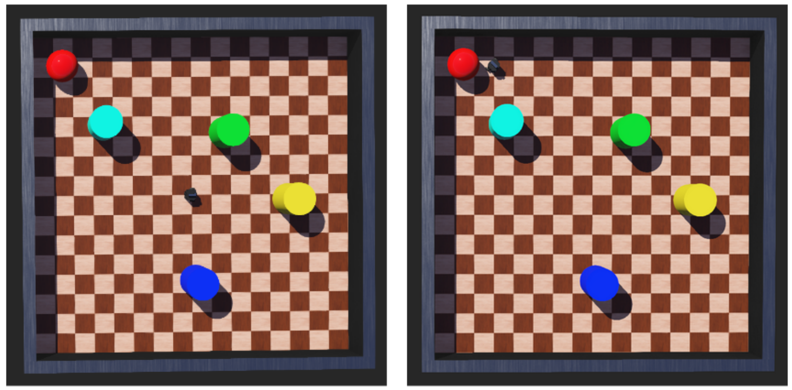

Obstacle Avoidance Based-Visual Navigation
Python (OpenCV), ROS, Webots
A simple visual navigation approach to obstacle avoidance and goal search. Given a robot equipped with a camera which it uses to capture images of its surroundings, the goal is to process the images to detect the obstacles and the target without relying on any other inputs. The performance of the robot is simulated using Webots to demonstrate that it is able to successfully accomplish this task in different setups.
